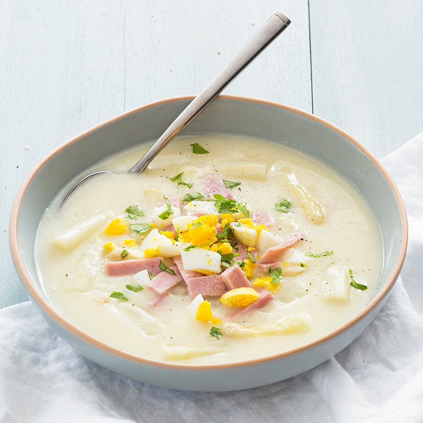

Heerlijk en makkelijk basisrecept voor een romige verse aspergesoep met een topping van reepjes ham en ei.
Ingrediënten
2 sjalotjes
700 gr witte asperges (geschild)
2 blokjes kippenbouillon
1,5 liter water
200 ml kookroom of slagroom
80 gr bloem
70 gr boter
2 eieren
150 gr reepjes beenham
verse peterselie om te garneren
Bereidingswijze
Snijd de asperges in stukken. Kook ze 5 minuten in ongeveer 1,5 liter water en laat daarna nog 10 minuten nagaren in het water.
Hak de sjalotjes fijn. Smelt de boter in een soeppan en fruit de sjalotjes hierin aan. Voeg dan de bloem toe en roer met een garde tot een roux en laat deze 5 minuten zachtjes bakken en garen. Giet de asperges af en vang al het kookvocht op. Los de bouillonblokjes op in het het kookvocht van de asperges. Giet dit beetje bij beetje bij de roux en blijf met een garde roeren zodat er geen klontjes ontstaan.
Als alle bouillon is toegevoegd roer je de kookroom er door en voeg je de gekookte asperges in stukken toe. Proef of de soep goed op smaak is en voeg eventueel een snufje peper en/of zout toe. Voeg de hamreepjes (gedeeltelijk) toe aan de soep. Schep de soep in borden en garneer eventueel met stukjes ei, hamreepjes en wat fijngehakte peterselie.

Tip Voor een glutenvrije soep vervang je de bloem door maizena.